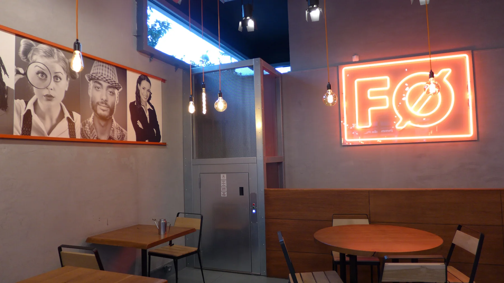
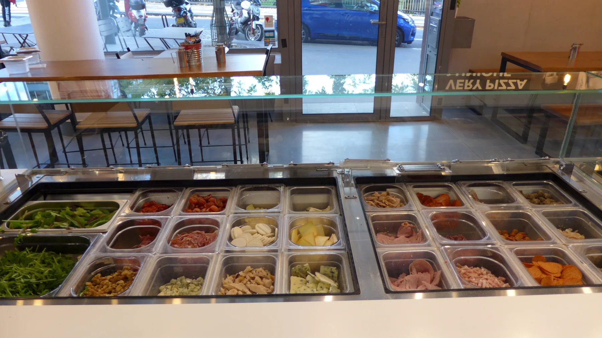
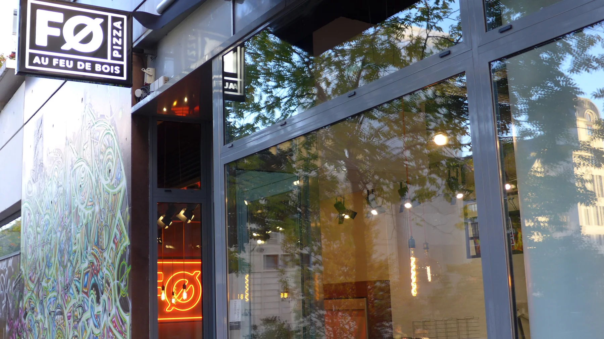

Ce soir,
vous êtes plutôt ?
Réconfort, fraîcheur ou grand écart assumé. Commencez par votre envie, pas par une recette imposée.
65+possibilités
dès le premier geste
dès le premier geste
Paris 13 · Saclay
Choisissez, combinez, osez. Plus de 65 ingrédients et une cuisson au feu de bois pour une pizza qui ne ressemble qu’à vous.
01 Le rituel FØ
La commande ne commence pas par une longue liste. Elle avance en trois gestes simples, de votre envie jusqu’au feu.
Réconfort, fraîcheur ou grand écart assumé. Commencez par votre envie, pas par une recette imposée.
Base tomate ou crème, ingrédients visibles, quantités choisies. Votre pizza prend forme devant vous.
Le four saisit la pâte à très haute température. Un bord vivant, un cœur léger, une pizza prête à sortir.
02 Studio FØ
Un aperçu interactif de votre créativité. Choisissez une base, ajoutez vos envies et voyez votre pizza prendre du relief.
Tomate ou crème fraîche.
Composez sans limites.
Deux minutes. C’est prêt.
Aperçu ludique. La composition complète s’effectue sur la carte du restaurant sélectionné.
Base, ingrédients, quantités : c’est vous le chef.
Une cuisson vive au feu de bois.
Sur place, à emporter ou en livraison.
04 Dans les coulisses
Pas de rideau entre vous et les ingrédients. Chez FØ, tout se voit : le comptoir, les gestes, le four et la flamme.



05 Deux adresses
Choisissez votre restaurant puis commandez en livraison, à emporter ou venez partager la chaleur du four.
MAINTENANT Une envie ?